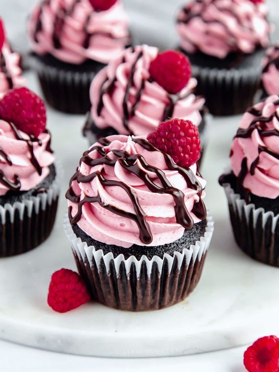
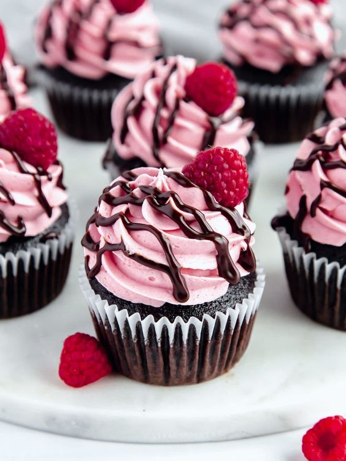

Pao ti je šećer tokom učenja?
Dobrodošao/la!
Zdravo, ovaj sajt sam napravila kako bih podelila svoje omiljene poslastice sa svim sladokuscima, a posebno studentima.
Zašto baš studentima? Pa jer sam i sama student.
Znam da dosta mojih kolega nije odavde i da će im značiti da se kad-kad oslade uz neku od ovih poslastica koja će ih podsetiti na one koje prave njihove mame, bake, tetke, strine, ujne....
Većina ovih poslastica se sprema brzo i lako...
U daljem tekstu možete pročitati recepte od rođendanskih torti, do najejednostavnijih kolača, izdvojila sam za svakog po nešto.
RECEPTI
O meni
Zovem se Milica, imam 22 godine i živim u Beogradu sa majkom.
Student sam smera internet tehnologije u Visoka škola za informacione i komunikacione tehnologije, poznata i kao ICT.
Slobodno vreme volim da iskoristim kako bih trenirala, fotografisala, pravila frizure, slikala, pisala, čitala, ali pre svega napravila neku ukusnu poslasticu za porodicu, prijatelje i sebe.
Svesna studentskih obaveza i potreba, odlučila sam da podelim svoje skromno znanje sa Vama.
Skoro sve što znam, naučila sam od domaćica u mojoj porodici, mame, bake i ujne.
Izabrala sam od svake najbolji recept i odlučila da podelim sa Vama, nadam se da će Vam se svideti ovo što sam izdvojila.
 
